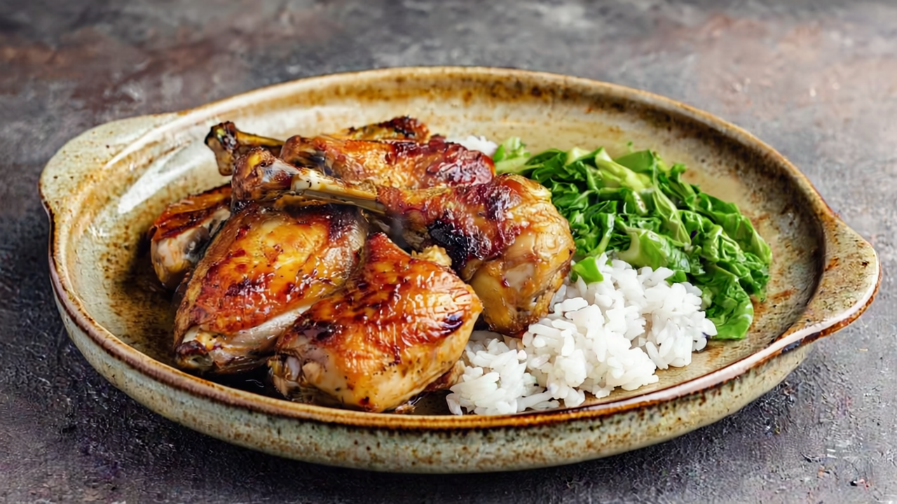

Home
RICE

DESCRIPTION
This dish features perfectly roasted chicken thighs with crispy, golden-brown skin and juicy meat. The chicken is served alongside a portion of fluffy white rice and fresh green cabbage that's been lightly cooked. Everything is presented on a rustic, earthy ceramic plate with speckled glaze detailing. The dish has a homestyle, comfort food appeal with a nice balance of protein, starch, and vegetables, all captured in warm lighting that highlights the appetizing textures and colors.
INGREDIENTS
- Ingredients for Roasted Chicken Thighs with Rice and Cabbage
- Chicken thighs (bone-in, skin-on)
- White rice (likely medium or long-grain)
- Green cabbage
- Salt and pepper (for seasoning)
- Cooking oil or butter (for roasting)
- Herbs and spices (likely includes garlic, thyme, or other aromatics)
- Possibly chicken broth (for added flavor in rice cooking)
- Optional glaze ingredients (honey, soy sauce, or other marinade components for the chicken)
STEPS
- Pat chicken thighs dry with paper towels
- Season generously with salt, pepper, and desired herbs/spices
- Let sit at room temperature for 15-20 minutes
- Preheat the oven
- Set to 400°F (200°C)
- Sear the chicken
- Heat oil in an oven-safe skillet over medium-high heat
- Place chicken thighs skin-side down
- Sear until skin is golden and crispy (5-7 minutes)
- Flip and sear other side briefly (2-3 minutes)
- Roast the chicken
- Transfer skillet to preheated oven
- Roast until internal temperature reaches 165°F (74°C), about 20-25 minutes
- Rinse rice until water runs clear
- Combine with water or broth (ratio: 1 cup rice to 2 cups liquid)
- Bring to boil, then reduce to simmer
- Cover and cook until tender (15-20 minutes)
- Fluff with fork when done
- Slice cabbage into thin strips
- Heat oil in a pan over medium heat
- Sauté cabbage until tender-crisp (5-7 minutes)
- Season with salt and pepper
- Plate the dish
- Arrange rice, chicken thighs, and cabbage on plate
- Drizzle with any pan juices from chicken (optional)
- Serve immediately